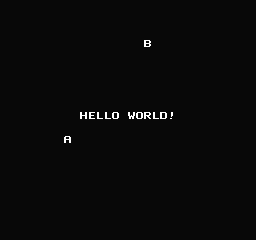

02、什么是v-blank?
向屏幕写入图片
如果在屏幕开启的时候使用 vram_adr() 或 vram_put() 函数，
有92％的可能会使写入屏幕的图片花屏或试滚动变得不对齐。
为什么会发生这种情况，基本上，PPU一次只能做一件事，而且当屏幕正在运行时，有92％的时间PPU正忙于从VRAM读取数据并将其发送到屏幕。
（翻译注：这货就是一根筋，只能干一件事儿，干多了就出错。92%是按照时间比算出来的，也就是说PPU主要工作是绘制图片，然后停下来很短的时间让用户更新VRAM以便重新绘制屏幕显示内容）
它逐行逐点的计算每个点要写入的颜色。（英文原版有油管视频，使用高速摄像机拍摄超级玛丽1的屏幕显示）
（视频放慢到逐行扫描的时候，可以看到屏幕从左向右，然后下一行从左到右快速绘制屏幕显示的点）
（就好像是我们看荧光棒那样，快速挥动就变成了一条线，有能力的可以翻墙过去看看）
视频地址：https://www.youtube.com/watch?v=3BJU2drrtCM
一旦到达底部，它会等待一段时间。这称为垂直空白期（v-blank）。这是PPU不忙的唯一时间，我们可以在此期间安全地将贴图写入屏幕（这个时间很短）。
此外，我们已打开NMI中断（寄存器2000中的这一位，1xxx xxxx，crt0.s.中启动代码中的某处有这个代码）。在v-blank开始时，PPU生成一个停止CPU执行的信号（NMI），它跳转到neslib.s中的nmi代码，并在v-blank期间执行。
我们知道它会在这段时间内转到nmi代码（asm，在neslib.s中），因此我们知道在此期间写入PPU是安全的（好吧，几个字节）。我们可以利用这个时间段，因为如果我们正在玩游戏，你关闭屏幕，写入屏幕，然后重新打开...屏幕将在此期间闪烁黑色，这有点烦人。因此，我们希望保持屏幕开启，并且我们希望在v-blank期间将数据写入PPU。
因此，当PPU忙于绘制屏幕时，我们将写入缓冲区。然后，当我们调用 ppu_wait_nmi()，它将设置一个标记，表示“我们的数据已准备好传输”，它将一直等到v-blank。nmi代码会自动将其传输到PPU。
在此之前，您需要 set_vram_update(address of data), 将我们的数据或缓冲区的地址传递给neslib。
我已经做了一些自动化系统可以读取的数据示例。您可以发送1个字节，也可以发送一组连续的数据（贴图）。
--SINGLE BYTE--
address high byte
address low byte
data (tile #)
EOF
MSB(NTADR_A(18,5)),
LSB(NTADR_A(18,5)),
‘B’,
NT_UPD_EOF
--CONTIGUOUS DATA--
address high byte + update horizontal
address low byte
# of bytes
data
EOF
MSB(NTADR_A(10,14))|NT_UPD_HORZ,
LSB(NTADR_A(10,14)),
12, // length of write
‘H’,
‘E’,
‘L’,
‘L’,
‘O’,
‘ ‘,
‘W’,
‘O’,
‘R’,
‘L’,
‘D’,
‘!’,
NT_UPD_EOF
(上面这2段我是真不知道怎么翻译了，原样放在这里了)
注意，可选，垂直更新，用NT_UPD_VERT替换NT_UPD_HORZ，它将从上到下而不是从左到右绘制。从左到右包裹到下一行。从上到下不会换行，您可能不希望超过屏幕的底部图块。
如果能去除大量多余的EOF，则可以在一帧中更新更多的贴图。见下面的hello2.c。空缓冲区只是EOF（= 0xff）。系统需要看到一个0xff，否则它将继续无限地推送瓦片。
（翻译解释：简单的说就是你可以大量的调用单个贴图显示，但是作者推荐的是一次把一堆东西排好序用一个函数直接连续输出。比如你要输出hello，就不要一个字母一个字母的去指定位置显示，然后再给个EOF表示写完了，这样只能减少你一帧能更新显示的内容）
可以缓冲多少字节？
大约31个单字节，或74个连续字节，或混合，介于两者之间。这样说有点模糊，你可以做一些尝试，就能准确的了解这个了。
如果您从不调整调色板，则每帧可以安全地获得更多（可能是40个单独，97个连续）
注意，相同的字节将一遍又一遍地传输到PPU，直到缓冲区发生变化。用户对此无感，但是CPU来说有点浪费时间。
您可以使用下面的函数将其关闭
set_vram_update (NULL)

https://github.com/nesdoug/02_Hello2/blob/master/hello2.c
https://github.com/nesdoug/02_Hello2
我注意到几乎没有人使用这个功能，也没有使用VRAM缓冲区。大多数人都在使用 vram_put() 或类似的东西。
我认为在运行中构建VRAM是件很笨拙的事儿，所以我打算写一个完整的支持库，让这个变得简单。